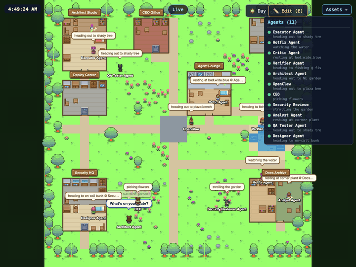
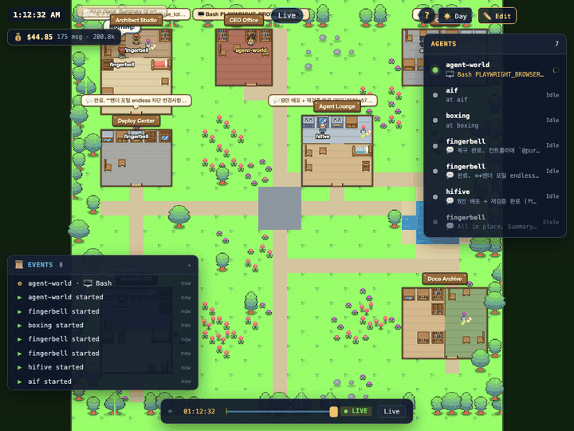
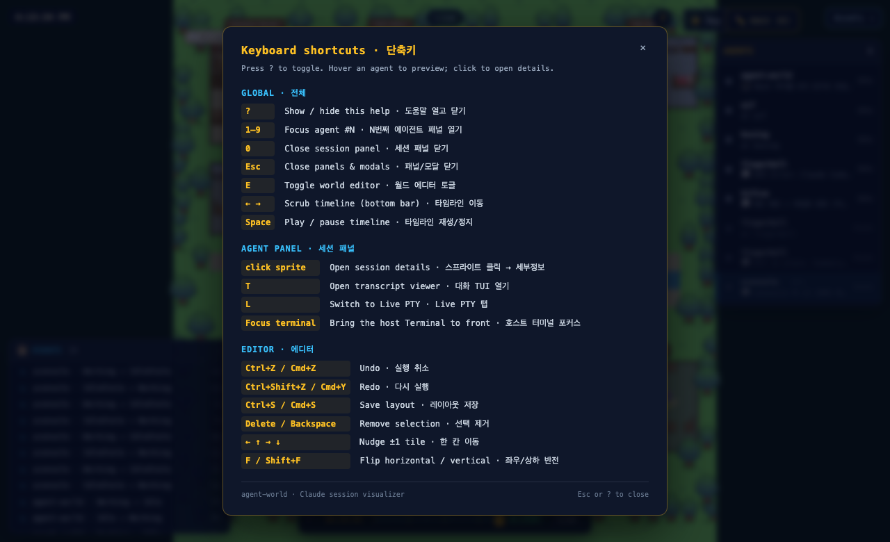

Spatial RPG-style village for live Claude Code CLI sessions. This Pages page is brochure-first — demos and status only. No fake live world.
Adapter needed
Live sprites require a local exporter: Mac ps/lsof + Claude CLI session discovery (or equivalent). A Windows local harness at :3102 cannot populate sprites for this Pages surface by itself. Pages hosts static assets only.
Demo — village

Recorded local demo — not a live feed from this host.
Demo — permission queue

Waiting sessions queue at the info desk (local capture).
Help overlay (local UX)

Reference UI from the local build.
What Pages can vs cannot do
Can: host this brochure, GIFs, and (later) a sanitized JSON poll like Crossing — if an adapter writes it.
Cannot: run Mac process discovery, Claude CLI hooks, file watchers, or a Node world server.